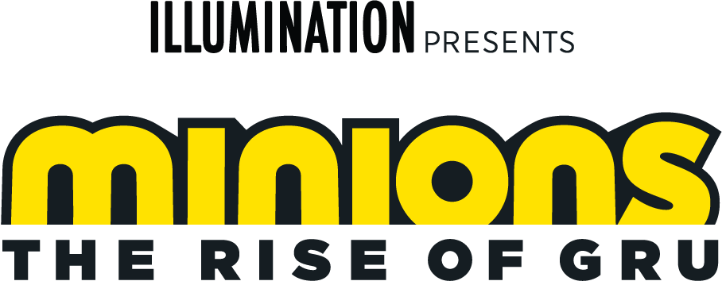
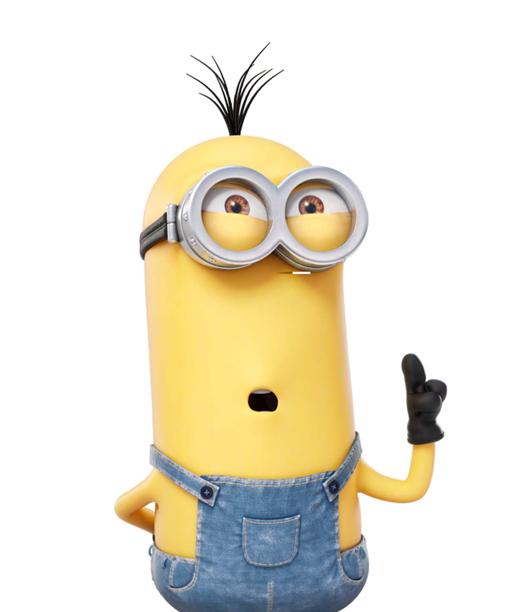
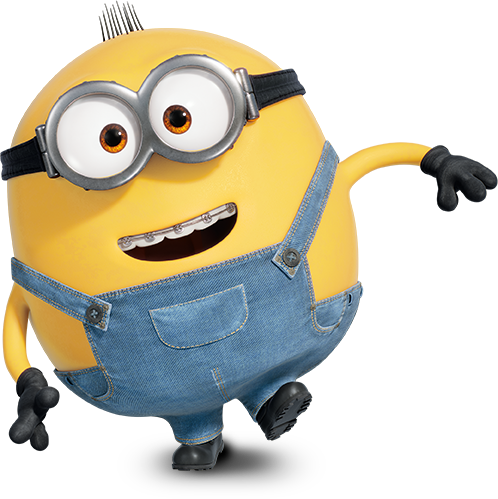
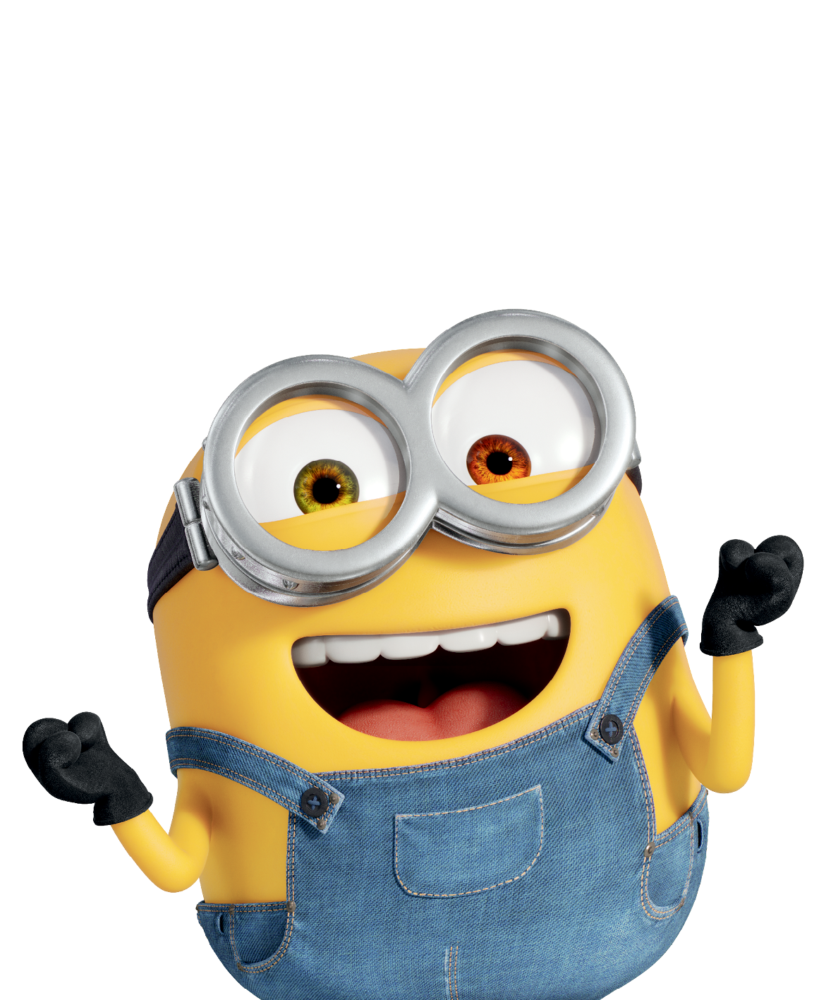

MINIONS: THE RISE OF GRU
Set in the 1970s, Minions: The Rise of Gru explores the origins – and growing pains – of evil with young Gru and his Minions, giving us a first-hand look at how they became the world’s most despicable team.
Details
- Genre: Animation, Family, Comedy
- Language: English
- Country: USA
- Release Date: 2019
- Runtime: 88 min
- IMDB Rating: 7.7
Cast
-
 Gru:
11-year-old boy who dreams of becoming the world’s baddest supervillain.
Gru:
11-year-old boy who dreams of becoming the world’s baddest supervillain.
-  Kevin: The self-proclaimed and overly bossy leader Minion.
-  Otto: Otto is chatty, easily distracted, and has a charming braces-induced lisp.
-  Bob: Sweet, childlike, and naïve, Bob is a teddy bear disguised as a Minion.
Trailer
About
Official page of Minions: The Rise of Gru on IMDb: IMDB page
Official page of Minions: The Rise of Gru on Rotten Tomatoes: Rotten Tomatoes page